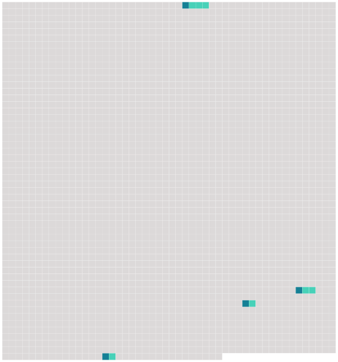

Longueur nb maillons : 4 mentions |
|
Ce chat tout seul, dans cette cuisine, semblait faire la soupe pour lui -même, et c'était sans doute lui qui avait disposé sur [la table de chêne] une assiette à bouquets verts et rouges, un gobelet d'étain, fourbi sans doute avec ses griffes tant il était rayé, et un pot de grès sur les flancs duquel se dessinaient grossièrement, en traits bleus, les armoiries du porche, de la clef de voûte et des portraits. [49 phrases]
Le Baron s'assit en silence devant [la petite table] , après avoir répondu d'un geste de main bienveillant au salut respectueux de Pierre. Celui -ci détacha la marmite de la crémaillère, en versa le contenu sur son pain taillé d'avance dans une écuelle de terre commune qu'il posa devant le Baron ; c'était ce potage vulgaire qu'on mange encore en Gascogne, sous le nom de garbure ; puis il tira de l'armoire un bloc de miasson tremblant sur une serviette saupoudrée de farine de maïs et l'apporta sur [la table] avec la planchette qui la soutenait. [9 phrases] Un reste de feu, qu'avivait la rafale engouffrée dans la cheminée, colorait de reflets bizarres le groupe réuni autour de [la table] avec une sorte d'intimité triste qui faisait ressortir encore la mélancolique solitude du château. |
 |
Il est possible de télécharger la ressource sur la page Ortolang |
Si vous avez des questions ou vous voyez des erreurs, merci d'envoyer un mail à silvia.federzoni89@gmail.com |